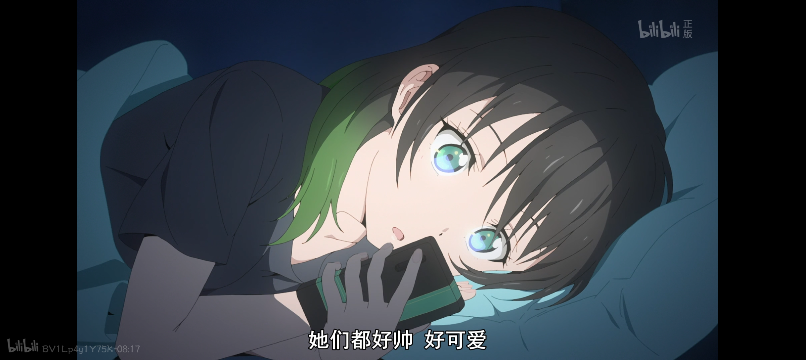
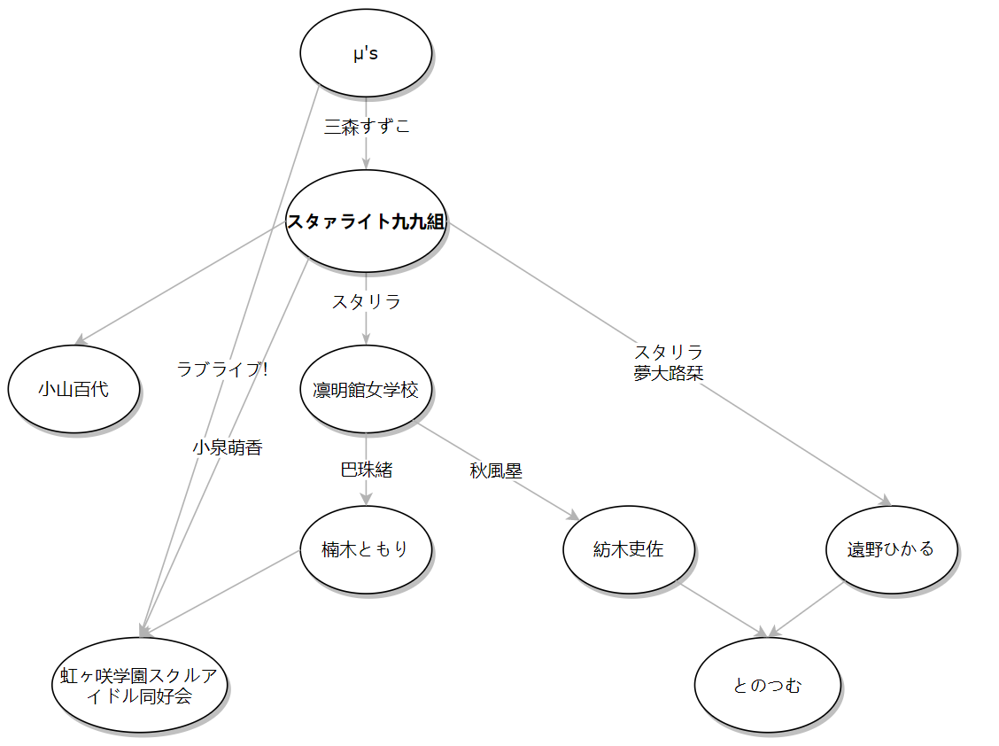
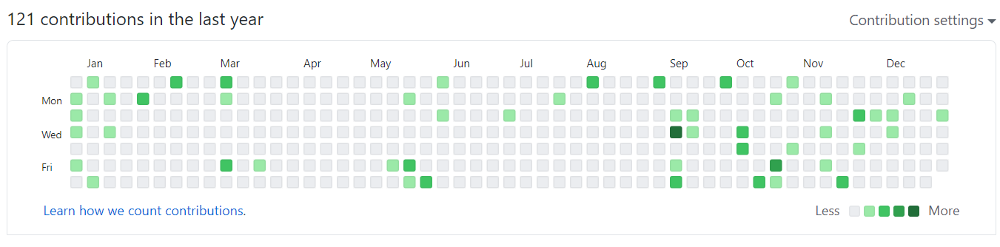

这里应该有个开头，但不知道怎么开，就算了。毕竟是2020年的总结，不守规矩一点倒更符合。
学业和科研
无事结束了大三的学业，不出意外的话应该马上也会无事结束咸鱼的大四上半学期。和往常一样，既不是一点没懂，也算不上有多通透。这学期意识到了选不是不得不选的课导致要在应对考试上浪费时间是多么蠢的事，那么马上要结束的应该也是大学期间选的最后一门课了。
有惊无险地保研去了上海交大，从决定留国内到拿到名额（甚至有那之后也有一段）的那段时间内一直重复着无意义的焦虑，被北大刷下来之后尤甚，脑子里充斥着各种保研局势严重的信息和对失学的恐惧。不过还好，我的运气不算太差。妮可的五年本科给我的改变可谓是翻天覆地，在交大的（至少）五年博士之后又会是什么样呢？——到时候再说吧。
被carry着完成了人生中第一个课题。我做的只是些平凡的工作，倒不如说不平凡的我也做不来。早就有了的我在科研上的能力比算不上多强的在做题上的能力还要差得多的预感得到了验证。可能我的能力和兴趣都只在于看看我们已经做到了什么程度。希望我今后别搞得太差。
生活
虽然世间经历了巨大的动荡，但多少不太合适地说，这对我倒成为了享受比以往安逸得多的生活的契机。疫情在沈阳并没有多严重（讽刺的是，在写这篇总结的现在，沈阳却成了全国最危险的地方之一。希望城没事）。事实上今年前半年待在家的时间可以说是我过过的最舒服的生活了。一个人待在家里也就意味着这片不小的空间完全属于我一个人，不算多的课不按时听也可以随时看回放（除了天力天测这屑课还要签到），所以时间的安排也能由我全部掌握，由于完全没有其他人的干扰，在不熬夜写代码/debug/追番以及没有失眠的情况下我竟能难得的做到23:00-9:00的规律作息（除了天力天测这屑课还要早起签到）。以及没有重到让我无暇休息的课业和科研任务让我不至于一天颓废到晚，对自己的兴趣也可以有足够的时间投入，四月那一场高强度剧本杀之后在群里闲聊使我也能保留和其他人的联系，隔三差五还可以找朋友串门，自己做的菜比妮可食堂合胃口得多，不自给但自足，一个月花销估计不到一千……说能一直过下去这种生活成为了我的理想都不为过。
其他
阅读
读了《科学革命的结构》。因为对科学哲学一直很感兴趣就去读了，对范式和科学革命有了一些概念，的确给出了一些与我的朴素直觉不同的对科学本身的看法。关于科学哲学以后应该还会继续了解，这本书之后应该也会再读一遍，整理篇博客出来。
读了《研究之美》。大一的时候就听说了，这回看到电脑里放了不知道多久的文件一个下午一口气读完了，感受到了酣畅淋漓的快感，看到无穷小和无穷大被构造出来的时候简直想欢呼一声（鉴于家里就我一个人，可能也真的叫出来了，记不得了）。用无趣的语言整理成了关于超现实数。
ACG
单独写在了2020年度总结——ACG部分。
声优偶像

由于众所周知的原因，本来很期待的今年少歌预定的两个活动——乐队live和大运动会都取消了，日本（自以为）控制住了之后的远足的Revue也因为奇怪的原因取消了。又由于显而易见的原因，没人引进剧场版总集篇到大陆，手贱看了剧透的我只能一边心慌地等着BD发售一边一遍遍听着「ああ 私たちは 何者でもない 夜明け前のほんのひととき」，还时不时担心明年新剧场版会不会把整个企划直接送走。好在靠Starry Diamond的BD和再生赞美曲的碟补充了一些starlight能量，特别是后者，不得不说少歌官方的确有一手，附赠的小册子记录了九九组和staff们一路的点点滴滴，浓缩了来自动画的感动和来自九九组的感动。这个企划今年也在支撑着我活下去。
以スタリラ为契机加推了长得可爱歌唱力又超高的楠木灯和甜到掉牙的とのつむ。以楠木灯为契机看了虹团的动画，观感异常的好，于是又成为新晋虹虹人。总之就是誰でも大好き。
（说起lovelive，其实本来想要去看年初的lovelive fes的，但是抽选没抽中，要是去了的话，最坏的情况可能困在日本回不来了……好险……）
顺便，画了个奇怪的东西：

节点代表加推对象，边代表加推契机。容易看出是有向无环图，我称之为DD树。
开发

连地铁的瓷砖都比我勤奋.jpg
“就你写的那垃圾项目也配称作开发？”我也是这么想的，但的确想不出别的标题了。
为了跑团方便写了个骰子机器人。用的是一直以来用的框架，我自己写的都是些简单到不行，没多少营养的东西。不过尽管如此，每次加新功能、重构之后也能有那么一点成就感。虽然从学C的时候遗留下的习惯还很重，但是现在写面向对象的代码也能越来越顺手了。年中那阵各大QQ机器人平台被封的时候消沉了一段时间——虽然是垃圾，也是我自己花时间亲手写的垃圾啊——不过还好mirai平台还活着，在它被封之前还能苟一段时间。
别的放到github上的项目几乎都是课题用的，没啥好说的。尽量做到了还算好看。
产出
试着做了下动画的二次创作，剪了两个勉强可以称作MAD的东西。结果无论是主观还是客观来看都很不怎么样，也是意识到了人与人的体质不可一概而论，自己的确没什么艺术细胞。但尽管明白自己做得很烂，仅仅是因为自己的作品得到来自完全不认识的陌生人的认可时的成就感却仍然很强烈，这可能是我唯一的完全因为自己的能力本身而得到他人认可的机会。所以无论好坏，有机会我还会继续做下去，继续用低水平的作品污染愿意关注我的人的眼球以换取不长久的虚荣心。
与标题不符但同质的一件事是，我从前意识不到在网络平台给不认识的人评论和交流有什么意思，不过今年也是大量开始了这种尝试。有时脱离了自己在熟人群体中的被确定了的身份，在网络空间上可能反而得到更客观的评价。（当然，那些乌烟瘴气的领域是不可能碰的，这辈子不可能碰的）
其他
其他值得记录的可能就是在妮可日语卡拉OK上去唱歌了。唱得很开心，虽然唱得不行形象也不行但是很开心。能登台演出的机会今后大概也不会再有了，总之很感谢日协，也很庆幸在大学最后一年搭上了末班车。
关于自己
如果说2020年的我自己，那大概是交织着安逸和焦虑，以及一边安逸一边焦虑地度过的。安逸的一方面，很难得的在很长的一段时间里我都能有合适的状态来审视自己的价值。其结果是，没有什么价值。这不仅是对社会做出贡献这种层面，也是说在几乎任何领域都没法做出什么让自己满意的东西。尽管理智告诉我这不要紧，人生下来不是为了完成某种被指定的目的的，但每每想到这点还是会为之难过。不过好在也有着支撑我的东西一直给我输入着正激励，这一年的思考也再次确定了，对这种正激励的追寻可以构成人生的意义。
而焦虑的一方面，不仅是关于保研，也有关于之后的人生。心理上一直觉得还很远的未来突然就来到了面前，各种想逃避却不得不面对的选择背后的重量似乎要压得我喘不过气来。在不断的准备材料、查找信息的过程中我才头一次感同身受的体会到，在社会中不得不操心的事比我本以为的要多得多。可以被安排的时间早就过去了，这些纷乱复杂的东西本就要由自己处理。我对这些仍然没那么习惯，但至少也不算是什么也不会了，至少这点上有所成长吧。
展望
我没有立flag的习惯，硬要说的话就是每学期开学从图书馆借一堆书，看几页或一页没看，在学期末再原样还回去。所以这里只是列一下希望能在2021年做到的事，仅仅只是愿望而已。
- 希望毕业旅行去日本玩一下，看看东京塔，进行一下圣地巡礼，也想在电影院看明年上映的少歌新剧场版。不过看日本防疫做的这熊样，大概是希望渺茫。不过还是希望，没准毕业之前能打上疫苗呢
- 希望搬砖之外也能多会点数学，多学点宇宙学，多学点广相
- 希望多学点web编程，希望能写出来能看的项目
- 希望能遇到新的优秀的动画
- 希望能无事毕业
- 希望我推都健康不出事，多出演点动画或舞台。希望少歌新剧场版能延续动画的水平，希望能多看到点少歌新活动，スタリラ别关服，少歌别凉（
- 希望周围的人都没事
- 希望2021也能活下去
最后
不会真的有人有耐心看到最后吧？——那也有可能是多年之后的我自己。总之来都来了，听听我今年最喜欢的歌再走吧。
選ばなかった過去たちへ 静かに捧ぐ讃美歌を